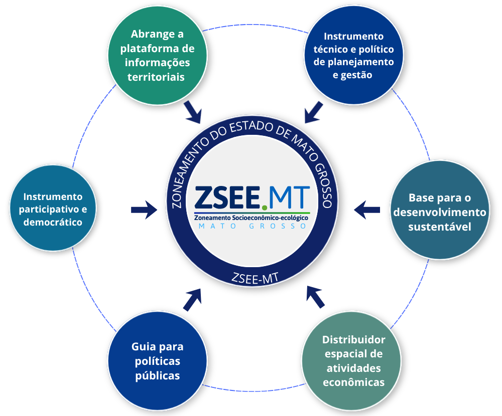

1981
A Constituição do Estado de Mato Grosso estabelece, no art. 263, inciso XV, a obrigatoriedade da elaboração do zoneamento para o estado.
Território e sustentabilidade
O Zoneamento Socioeconômico-Ecológico de Mato Grosso (ZSEE-MT) constitui importante instrumento para orientar o uso do território e promover um desenvolvimento mais equilibrado, sustentável e baseado em critérios técnicos.
De caráter multitemático e transversal, integra informações ambientais, sociais, econômicas e territoriais, proporcionando uma visão sistêmica do Estado e oferecendo diretrizes para subsidiar as decisões do poder público e dos agentes privados.
O ZSEE-MT é, portanto, um instrumento estratégico de planejamento e ordenamento territorial, voltado à promoção do desenvolvimento sustentável. Fundamentado no Decreto Federal nº 4.297, de 10 de julho de 2002, e alinhado aos princípios da Política Nacional do Meio Ambiente (PNMA), instituída pela Lei nº 6.938/1981, busca conciliar o desenvolvimento econômico, a conservação dos recursos naturais e a melhoria da qualidade de vida da população.

Nossa trajetória
Principais marcos institucionais, técnicos e legislativos da construção do Zoneamento Socioeconômico-Ecológico de Mato Grosso.
A Constituição do Estado de Mato Grosso estabelece, no art. 263, inciso XV, a obrigatoriedade da elaboração do zoneamento para o estado.
É sancionada a Lei Estadual nº 5.993, que institui a “Política de Ordenamento Territorial do Estado de Mato Grosso”, baseada numa primeira versão do ZEE na escala 1:1.500.000, elaborada pela SEPLAN (atual SEPLAG).
A SEPLAN realiza licitação internacional para elaboração do ZEE. A empresa de consultoria Consórcio Nacional de Engenheiros Consultores (CNEC) é contratada para os estudos.
É dado o início oficial dos trabalhos técnicos da licitação internacional.
É sancionada a Lei Complementar nº 38, que institui o Código Ambiental de Mato Grosso, incluindo o zoneamento como instrumento da Política Estadual de Meio Ambiente.
Ocorre a conclusão dos estudos técnicos do ZEE, iniciados em 1994.
O Poder Executivo de MT envia à Assembleia Legislativa um projeto de lei sobre o zoneamento. Em 2005, o projeto é retirado para revisão.
A Embrapa Solos é contratada para revisar a proposta. Um seminário técnico é realizado com representantes da SEPLAN, SEMA, MMA e outras instituições.
É criada a Comissão Estadual de Zoneamento Socioeconômico-Ecológico (CEZSEE/MT) pelo Decreto Estadual nº 1.139.
O Governador Blairo Maggi envia à Assembleia Legislativa o Projeto de Lei nº 273/2008, instituindo a Política de Planejamento e Ordenamento Territorial do Estado.
A Assembleia Legislativa promove seminários técnicos e audiências públicas nas 12 regiões de planejamento do estado. Participam mais de 50 mil pessoas.
É apresentado o substitutivo integral ao PL 273/2008 pelo Deputado Alexandre César.
Dois novos substitutivos integrais são apresentados por lideranças partidárias, com atualizações e ajustes à proposta anterior.
É aprovado o terceiro substitutivo integral, com 17 emendas, em segunda votação pela Assembleia Legislativa.
A redação final do projeto é aprovada e encaminhada ao Poder Executivo.
É sancionada a Lei Estadual nº 9.523/2011, que institui oficialmente o ZSEE/MT.
O Ministério Público de MT propõe a Ação Civil Pública nº 1067-82.2011.811.0082, questionando a legalidade da Lei nº 9.523/2011. Uma liminar suspende seus efeitos.
Apesar da liminar, o Governo de MT submete o ZSEE/MT à Comissão Coordenadora do ZEE no Território Nacional (CCZEE) para avaliação.
A decisão de mérito da ação civil, proferida pelo Juízo, suspende definitivamente os artigos da Lei nº 9.523/2011 referentes ao ZSEE-MT.
É publicado o Decreto nº 883/2017, que institui a Comissão Estadual do ZSEE/MT (CEZSEE/MT), incluindo representantes do governo e da sociedade civil para acompanhar e avaliar o zoneamento.
Use as setas para explorar os anos. No celular, deslize os cartões para os lados.
Instituições e participação
O estudo do Zoneamento Socioeconômico-Ecológico de Mato Grosso (ZSEE-MT) foi desenvolvido pela Universidade Federal de Viçosa (UFV), sob a coordenação da Superintendência de Indicadores Socioeconômicos e Ordenamento Territorial (SISOT) da SEPLAG-MT.
O processo contou com a participação de representantes do poder público, através da Comissão Técnica de Conformidade (CTC), e da sociedade civil, representada pela Comissão Estadual de Zoneamento Socioeconômico-Ecológico (CEZSEE-MT), que acompanhou o desenvolvimento dos trabalhos por intermédio de um Grupo de Trabalho específico.
A seguir, apresentam-se a composição e as funções dos grupos envolvidos:
Tire suas dúvidas
Resposta em elaboração.
Resposta em elaboração.
Resposta em elaboração.
Resposta em elaboração.
Resposta em elaboração.
Resposta em elaboração.
Resposta em elaboração.